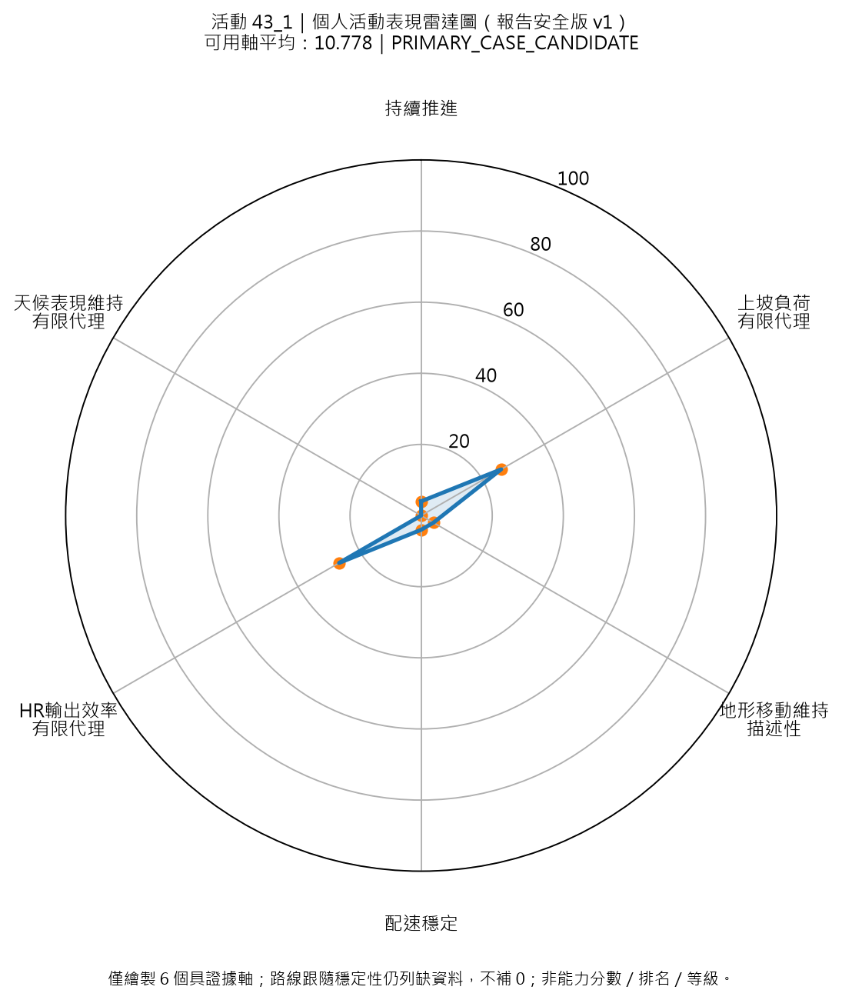
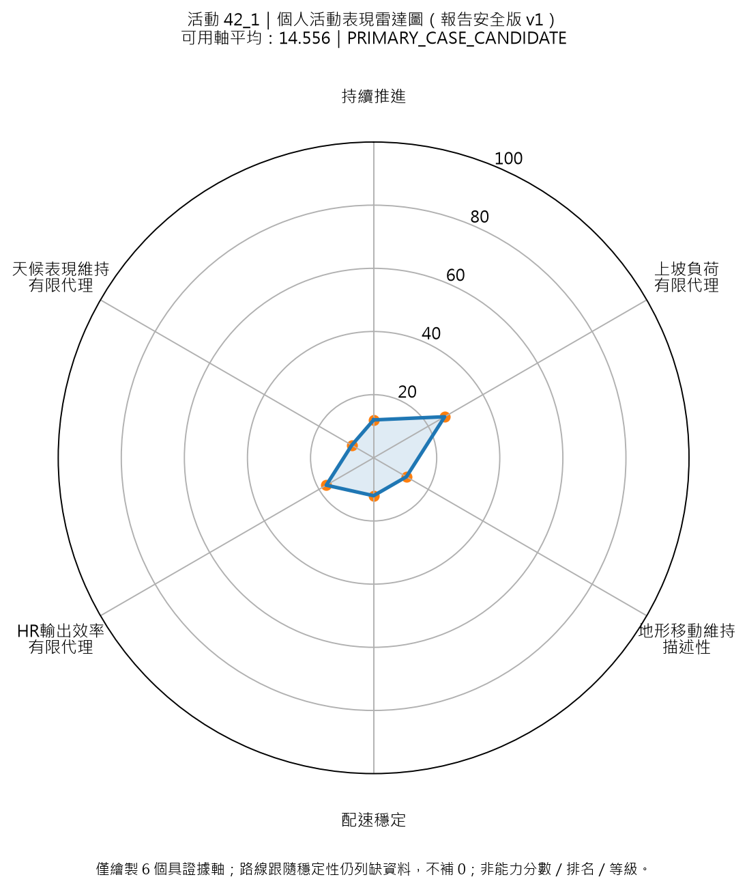
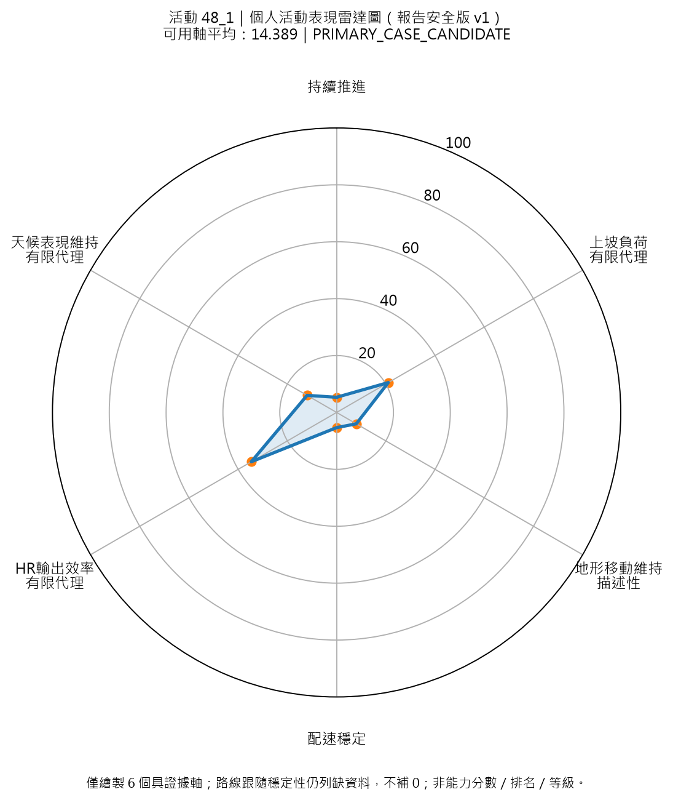
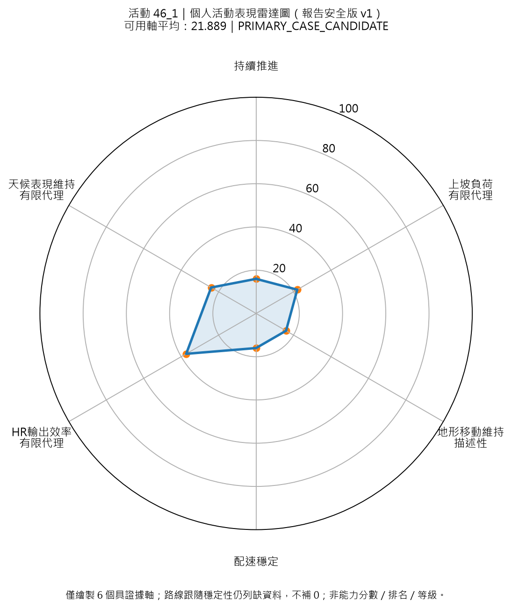
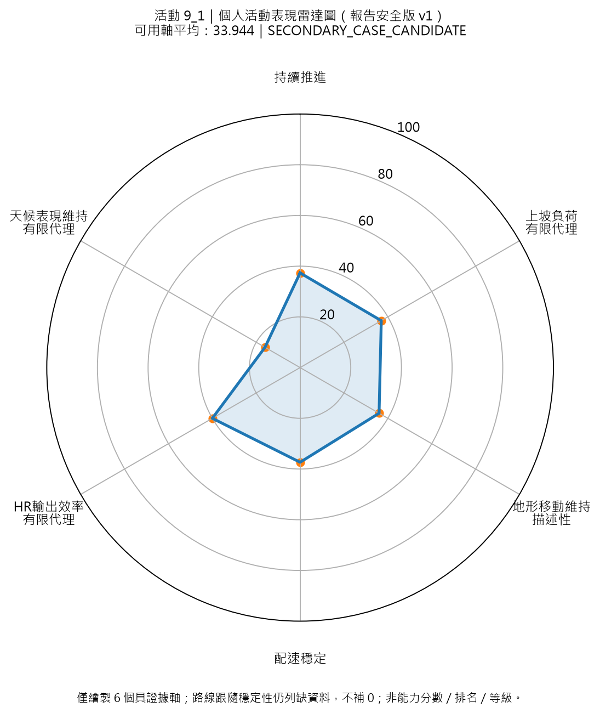
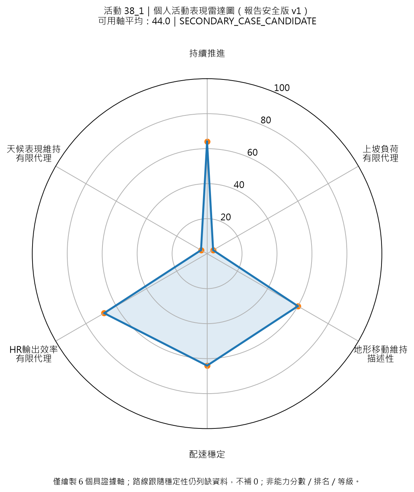
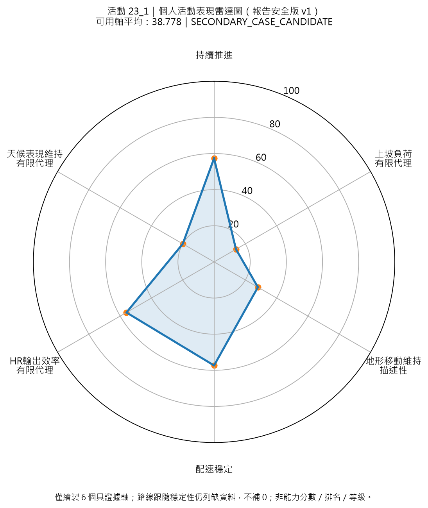
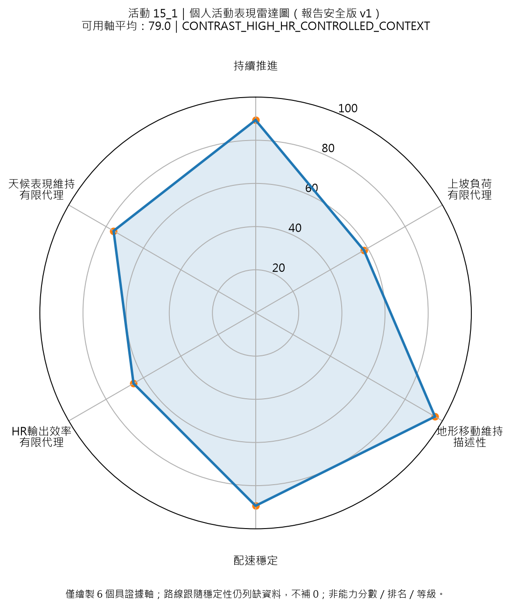
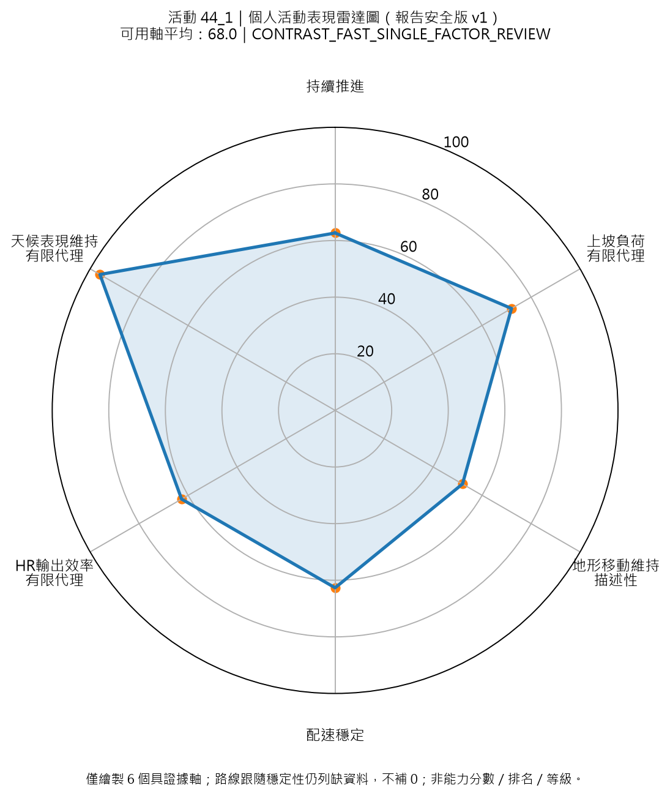
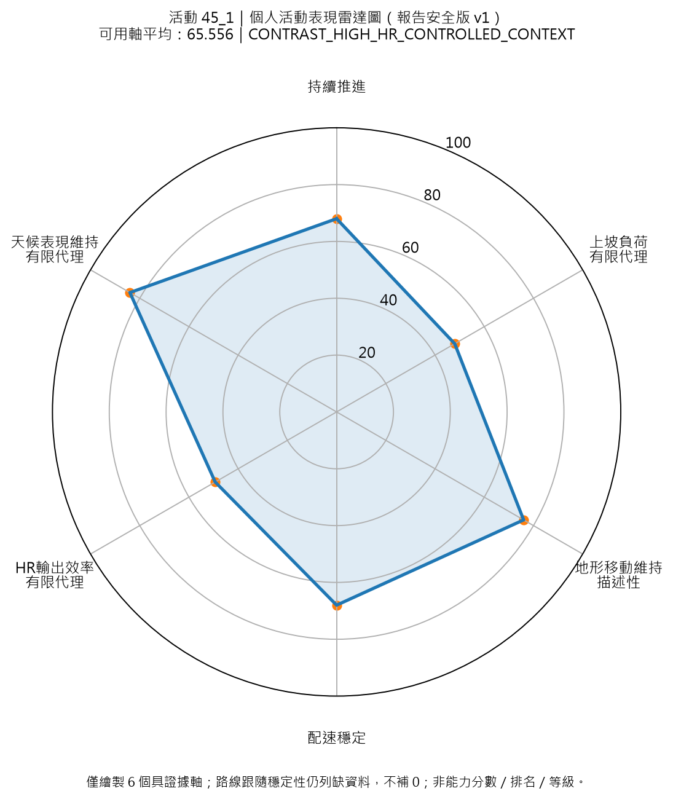

本版繪製 6 個具證據支援之軸。地形移動維持（描述性）由 CH6.5.6 admission audit v1.2 放行。路線跟隨穩定性仍列為資料不足，不補 0。
Axis admission decision: ADMIT_TO_RADAR_V1_DESCRIPTIVE_SUPPORTED_AXIS_WITH_BOUNDARY；gate pass: 13/13
CJK font source: C:\Windows\Fonts\msjh.ttc
Output root: D:\mountain_work\115_osm\outputs\report_figures\ch6_5_5_personal_activity_performance_radar_report_safe_v1_terrain_axis
可用軸平均：10.778
地形移動維持（描述性）：4.0
活動歷程標記：ACTIVITY_HISTORY_MULTI_FACTOR_STRAIN_CANDIDATE
報告角色：REPORT_PRIMARY_CASE_CANDIDATE
未繪製資料不足軸：路線跟隨穩定性

可用軸平均：14.556
地形移動維持（描述性）：12.0
活動歷程標記：ACTIVITY_HISTORY_MULTI_FACTOR_STRAIN_CANDIDATE
報告角色：REPORT_PRIMARY_CASE_CANDIDATE
未繪製資料不足軸：路線跟隨穩定性

可用軸平均：14.389
地形移動維持（描述性）：8.0
活動歷程標記：ACTIVITY_HISTORY_MULTI_FACTOR_STRAIN_CANDIDATE
報告角色：REPORT_PRIMARY_CASE_CANDIDATE
未繪製資料不足軸：路線跟隨穩定性

可用軸平均：21.889
地形移動維持（描述性）：16.0
活動歷程標記：ACTIVITY_HISTORY_MULTI_FACTOR_STRAIN_CANDIDATE
報告角色：REPORT_PRIMARY_CASE_CANDIDATE
未繪製資料不足軸：路線跟隨穩定性

可用軸平均：33.944
地形移動維持（描述性）：36.0
活動歷程標記：ACTIVITY_HISTORY_MODERATE_STRAIN_CANDIDATE
報告角色：REPORT_SECONDARY_CASE_CANDIDATE
未繪製資料不足軸：路線跟隨穩定性

可用軸平均：44.0
地形移動維持（描述性）：60.0
活動歷程標記：ACTIVITY_HISTORY_MODERATE_STRAIN_CANDIDATE
報告角色：REPORT_SECONDARY_CASE_CANDIDATE
未繪製資料不足軸：路線跟隨穩定性

可用軸平均：38.778
地形移動維持（描述性）：28.0
活動歷程標記：ACTIVITY_HISTORY_MODERATE_STRAIN_CANDIDATE
報告角色：REPORT_SECONDARY_CASE_CANDIDATE
未繪製資料不足軸：路線跟隨穩定性

可用軸平均：79.0
地形移動維持（描述性）：96.0
活動歷程標記：HIGH_HR_CONTROLLED_OUTPUT_CONTEXT_NOT_STRAIN
報告角色：
未繪製資料不足軸：路線跟隨穩定性

可用軸平均：68.0
地形移動維持（描述性）：52.0
活動歷程標記：ACTIVITY_HISTORY_SINGLE_FACTOR_HR_BEHAVIOR_REVIEW_NEEDS_NUMERIC_CHECK
報告角色：NUMERIC_DETAIL_REVIEW_NOT_PRIMARY_CASE_YET
未繪製資料不足軸：路線跟隨穩定性

可用軸平均：65.556
地形移動維持（描述性）：76.0
活動歷程標記：HIGH_HR_CONTROLLED_OUTPUT_CONTEXT_NOT_STRAIN
報告角色：
未繪製資料不足軸：路線跟隨穩定性
